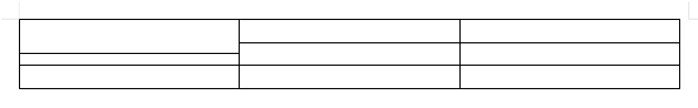
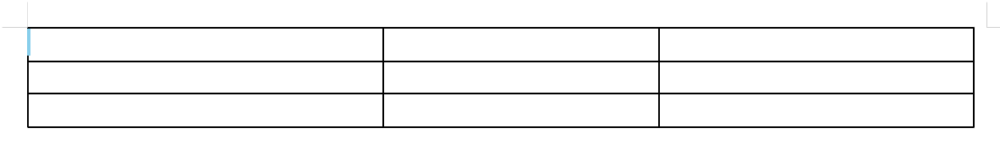
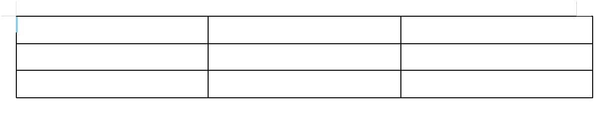
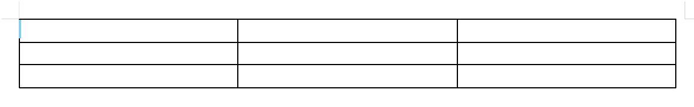
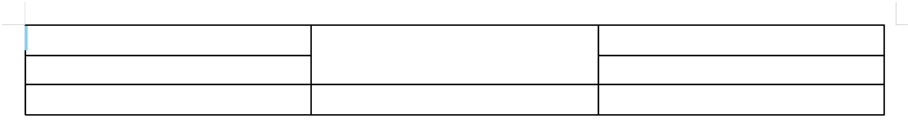
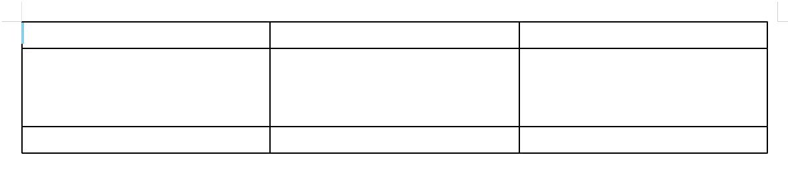
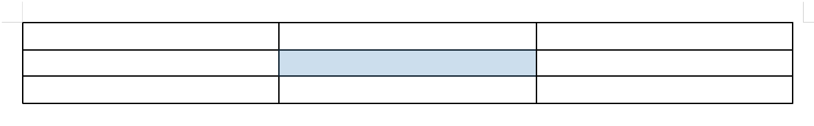
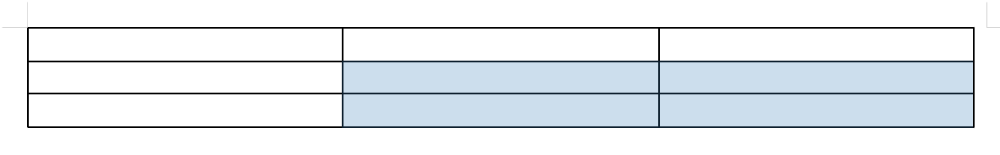
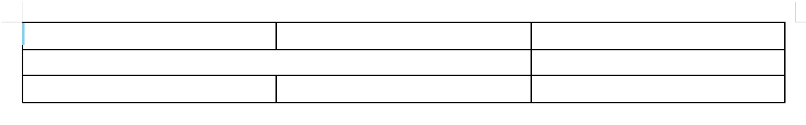

2026-08-17 실측 · 엔진 프로브 56케이스 + 화면 조작 23케이스를 실제로 실행해 엔진이 돌려준 메시지와 표 크기 변화를 그대로 옮겼습니다. 그림은 도식, 사진은 실제 편집기 화면입니다.
| 조작 | 방법 | 표 크기 | 무엇이 바뀌나 |
|---|---|---|---|
| 어긋내기 | Shift + 경계선 드래그 / F5 → Shift+화살표 | 불변 | 칸 하나의 경계만 이동 — 줄이 어긋남 |
| 경계선 조절 | 경계선 그냥 드래그 / F5 → Alt+화살표 | 불변 | 그 경계를 쓰는 줄 전체 이동 — 배분만 바뀜 |
| 표 크기 조절 | 표 선택 후 핸들(오른쪽·아래·모서리) / F5 → Ctrl+화살표 | 변함 | 표 전체가 비율대로 커지거나 작아짐 |
| 표 이동 | Alt+클릭으로 표 선택 후 드래그/화살표 | 불변 | 표의 위치만 이동(글자처럼 취급이면 불가) |
표에서 "안 된다"고 느끼는 대부분은 다른 조작을 하고 있었던 경우입니다. 네 조작은 목적도 결과도 다릅니다.
셀 하나의 경계선만 옮겨 다른 줄과 어긋나게 만듭니다. 위·아래·좌·우 네 방향 모두 되고, 표 전체 크기는 절대 바뀌지 않습니다(이웃 칸에서 공간을 주고받습니다).

그 경계선을 쓰는 줄 전체가 함께 움직이고, 반대편 이웃이 그만큼 양보해 표 크기는 유지됩니다. 실측: 열 폭 186/186/186 → 211/162/186px, 표 폭 559px 그대로.

표 자체가 커지거나 작아집니다. 실측: 559×59px → 599×89px(핸들), 559×59 → 567×67px(Ctrl). 모든 열·행이 비율대로 함께 늘어납니다.

자유 배치 표만 움직입니다. 실측: 표 위치 (113,132) → (125,144). 글자처럼 취급으로 놓인 표는 아무리 끌어도 움직이지 않습니다(오류도 안 뜹니다).
한 칸 경계만 옮기는 조작입니다. 표 크기는 절대 바뀌지 않습니다.
표의 맨 아래·맨 오른쪽 선은 뺏어올 이웃이 없습니다. 1열짜리 표의 세로선, 1행짜리 표의 가로선도 전부 바깥 테두리라 같은 이유로 거부됩니다.

세로 경계는 좌우 칸 높이가, 가로 경계는 위아래 칸 폭이 같아야 합니다. 한쪽이 병합돼 크기가 다르면 격자가 성립하지 않아 거부됩니다. 대상이 병합됐든 이웃이 병합됐든 같습니다.

칸은 자기 안의 글줄보다 얇아질 수 없습니다. 빈 칸은 2.7px까지 줄어들지만, 글자가 한 줄 있으면 그 줄 높이가 바닥입니다.
한 방향으로 반복하면 이웃이 최소 크기(2.7px)에 닿습니다. 실측: 3×3 새 표에서 오른쪽으로 한 칸씩 밀면 26번째에 거부. 그때까지 표 폭은 한 번도 변하지 않았습니다.
이웃보다 큰 값을 줘도 거부되지 않고 한계 지점까지 갑니다. "많이 끌었는데 조금만 움직였다"로 보여 실패처럼 느껴집니다. 다른 열이 이미 어긋나 있으면 그 선에서 한 번 멈추고, 한 번 더 끌면 넘어갑니다.
줄 전체를 옮기는 조작입니다. 표 크기는 유지되고 배분만 바뀝니다.
표 외곽 네 선은 리사이즈 대상에서 아예 제외돼 있습니다(마우스 커서도 안 바뀝니다). 실측: 바깥 아래·오른쪽 테두리를 끌어도 표 크기 59.3px / 559.4px 그대로.
갓 만든 표는 모든 행이 이미 글줄 바닥입니다. 한 행을 늘리려면 이웃 행이 그만큼 줄어야 하는데 이웃도 바닥이라 움직일 수 없습니다. 실측: 19.8/19.8/19.8px → 변화 없음.

한 칸만의 선(어긋난 선)을 Shift 없이 잡으면 자동으로 어긋내기로 처리됩니다. 원래 정렬 위치까지 끌어다 놓으면 자동으로 원상 복구됩니다.
엔진 최소 셀 크기는 2.7px, 화면 조작 최소는 열 18.9px · 행 17.0px입니다. 그 아래 값은 거부가 아니라 조용히 잘려서 적용됩니다.
F5로 칸을 선택한 뒤의 이동·확장 규칙입니다.
F5로 칸을 선택하면 화살표로 칸 사이를 옮겨 다닙니다. 표 끝에서는 더 가지 않고 멈춥니다. Escape로 해제합니다. 병합된 칸은 한 칸으로 취급되고, 어긋낸 표의 조각 칸도 정상 순회합니다.

F5를 한 번 더 누르면 화살표가 이동이 아니라 범위 확장이 됩니다. 마우스로 칸 위를 드래그해도 범위가 선택됩니다(실측: 9칸 전부 선택).

셀 보호가 켜진 칸에 캐럿이 있으면 병합·나누기·행열 삽입삭제를 포함한 편집이 차단됩니다.
글상자(텍스트 상자) 안에 든 표의 칸에서는 F5가 칸 선택으로 들어가지 않습니다. 표 개체 선택(Escape)은 되지만 칸 선택만 구멍입니다.
칸 선택 상태에서 Shift+화살표를 누르면 선택이 넓어지는 게 아니라 경계선이 어긋납니다. 많이 헷갈리는 지점입니다.
칸 선택 화살표는 표 밖으로 나가지 않고 멈춥니다. 반면 Tab은 마지막 칸에서 새 행을 만들고, Shift+Tab은 첫 칸에서 표 밖으로 나갑니다.
표 구조를 바꾸는 조작의 제약입니다.
선택 범위가 기존 병합 칸이나 어긋내기 조각을 반쪽만 걸치면 거부됩니다. 특히 어긋낸 표에서는 화면상 네모로 보여도 조각 경계가 범위 중간을 지나가 자주 막힙니다.

「셀 나누기」의 기본 동작은 병합 해제입니다. 병합되지 않은 칸을 그냥 나누려 하면 거부됩니다.
표에는 최소 1행 1열이 남아야 합니다. 여러 행을 한꺼번에 지우다 이 한계에 닿으면 앞서 지운 행은 그대로 남고 되돌리기도 안 됩니다.
행을 넣으면 표가 그만큼 세로로 커지고, 열을 넣으면 기존 열들이 비례해 좁아져 표 폭이 유지됩니다(안 그러면 표가 용지를 넘어갑니다). 병합이 걸친 자리에 넣으면 병합 칸이 함께 늘어납니다.
중첩된 안쪽 표에서 병합·나누기·행열 삽입삭제를 하면 좌표는 안쪽 기준인데 실제로는 바깥 표에 적용됩니다. 범위를 벗어나면 거부되고, 안 벗어나면 엉뚱한 칸이 바뀝니다.
선택한 행을 하나씩 지우다 마지막 1행 한계에 닿으면, 앞서 지운 행은 그대로 남고 되돌리기 항목도 생기지 않습니다.
각 케이스마다 새 표를 만들어 실제로 실행했습니다. "표 크기" 칸은 조작 후 표 폭·높이가 유지됐는지입니다.
| 판정 | 분류 | 상황 | 엔진 응답 | 표 크기 |
|---|---|---|---|---|
| 가능 | 어긋내기 | 내부 가로 경계를 아래로 | OK (한계까지 이동/적용) | 표 크기 불변 |
| 가능 | 어긋내기 | 내부 가로 경계를 위로 | OK (한계까지 이동/적용) | 표 크기 불변 |
| 가능 | 어긋내기 | 내부 세로 경계를 오른쪽으로 | OK (한계까지 이동/적용) | 표 크기 불변 |
| 가능 | 어긋내기 | 내부 세로 경계를 왼쪽으로 | OK (한계까지 이동/적용) | 표 크기 불변 |
| 거부 | 어긋내기 | 표의 맨 아래(바깥) 테두리 | 바깥 테두리는 어긋낼 수 없습니다 | 표 크기 불변 |
| 거부 | 어긋내기 | 표의 맨 오른쪽(바깥) 테두리 | 바깥 테두리는 어긋낼 수 없습니다 | 표 크기 불변 |
| 거부 | 어긋내기 | 1열 표의 세로 경계 | 바깥 테두리는 어긋낼 수 없습니다 | 표 크기 불변 |
| 거부 | 어긋내기 | 1행 표의 가로 경계 | 바깥 테두리는 어긋낼 수 없습니다 | 표 크기 불변 |
| 거부 | 어긋내기 | 오른쪽 이웃이 세로 병합(높이 불일치) | 위아래 높이가 다른 칸과는 경계를 어긋낼 수 없습니다 | 표 크기 불변 |
| 거부 | 어긋내기 | 아래 이웃이 가로 병합(폭 불일치) | 좌우 폭이 다른 칸과는 경계를 어긋낼 수 없습니다 | 표 크기 불변 |
| 가능 | 어긋내기 | 양쪽 모두 같은 높이로 병합 | OK (한계까지 이동/적용) | 표 크기 불변 |
| 거부 | 어긋내기 | 글자 든 아래 칸을 글줄보다 얇게 | 이웃 칸에 남는 높이가 없습니다 | 표 크기 불변 |
| 가능 | 어긋내기 | 한 번에 아주 크게(한계 클램프) | OK (한계까지 이동/적용) | 표 크기 불변 |
| 거부 | 어긋내기 | 같은 방향 반복(이웃 소진까지) | 이웃 칸에 남는 폭이 없습니다 | 표 크기 불변 |
| 가능 | 어긋내기 | 이미 어긋난 경계를 같은 방향으로 더 | OK (한계까지 이동/적용) | 표 크기 불변 |
| 가능 | 어긋내기 | 어긋난 경계를 반대 방향으로 되돌리기 | OK (한계까지 이동/적용) | 표 크기 불변 |
| 가능 | 어긋내기 | 어긋낸 경계를 원래대로 복원 | OK (한계까지 이동/적용) | 표 크기 불변 |
| 가능 | 어긋내기 | 이웃 열이 만든 기준선을 넘어 어긋내기 | OK (한계까지 이동/적용) | 표 크기 불변 |
| 가능 | 어긋내기 | 한 행 어긋낸 뒤 다른 행의 같은 경계 | OK (한계까지 이동/적용) | 표 크기 불변 |
| 가능 | 크기조절 | 열 폭 넓히기 | OK (한계까지 이동/적용) | 표 폭 변함 |
| 가능 | 크기조절 | 열 폭 좁히기 | OK (한계까지 이동/적용) | 표 크기 불변 |
| 가능 | 크기조절 | 열 폭을 0 이하로(최소 클램프) | OK (한계까지 이동/적용) | 표 크기 불변 |
| 가능 | 크기조절 | 행 높이 키우기(행 전체) | OK (한계까지 이동/적용) | 표 높이 변함 |
| 가능 | 크기조절 | 새 표에서 행 높이 줄이기(글줄 바닥) | OK (한계까지 이동/적용) | 표 크기 불변 |
| 가능 | 크기조절 | 어긋난 표에서 열 폭 조절 | OK (한계까지 이동/적용) | 표 폭 변함 |
| 가능 | 병합·나누기 | 가로로 두 칸 병합 | OK (한계까지 이동/적용) | 표 크기 불변 |
| 가능 | 병합·나누기 | 2×2 블록 병합 | OK (한계까지 이동/적용) | 표 높이 변함 |
| 가능 | 병합·나누기 | 한 칸만 지정해 병합 | OK (한계까지 이동/적용) | 표 크기 불변 |
| 거부 | 병합·나누기 | 표 밖 범위까지 병합 | 병합 범위 (0,0)~(5,5)가 표 크기 3×3를 초과합니다 | 표 크기 불변 |
| 가능 | 병합·나누기 | 병합된 칸 나누기 | OK (한계까지 이동/적용) | 표 크기 불변 |
| 거부 | 병합·나누기 | 병합 안 된 칸 나누기 | 병합되지 않은 셀은 나눌 수 없습니다 | 표 크기 불변 |
| 거부 | 병합·나누기 | 어긋낸 표에서 블록 병합 | 셀 (1,1) span (2,1)이 병합 범위를 벗어납니다 | 표 크기 불변 |
| 가능 | 행·열 | 행 아래에 삽입 | OK (한계까지 이동/적용) | 표 높이 변함 |
| 가능 | 행·열 | 행 위에 삽입 | OK (한계까지 이동/적용) | 표 높이 변함 |
| 가능 | 행·열 | 가운데 행 삭제 | OK (한계까지 이동/적용) | 표 높이 변함 |
| 거부 | 행·열 | 마지막 남은 행 삭제 | 최소 1행은 유지해야 합니다 | 표 크기 불변 |
| 가능 | 행·열 | 세로 병합이 걸친 행 삭제 | OK (한계까지 이동/적용) | 표 높이 변함 |
| 가능 | 행·열 | 어긋낸 표에 행 삽입 | OK (한계까지 이동/적용) | 표 높이 변함 |
| 가능 | 행·열 | 어긋낸 표에서 행 삭제 | OK (한계까지 이동/적용) | 표 높이 변함 |
실제 편집기에서 마우스·키보드를 그대로 흉내내 측정했습니다.
| 분류 | 조작 | 결과 | 비고 |
|---|---|---|---|
| 셀 선택·이동 | F5 선택 후 ↓ 반복 | 0,0-0,0 → 1,0-1,0 → 2,0-2,0 → 2,0-2,0 → 2,0-2,0 | 표 끝에서 정지 |
| 셀 선택·이동 | F5 선택 후 → 반복 | 2,0-2,0 → 2,1-2,1 → 2,2-2,2 → 2,2-2,2 → 2,2-2,2 | 표 끝에서 정지 |
| 셀 선택·이동 | Escape 로 셀 선택 해제 | 해제됨(선택 없음) | |
| 셀 선택·이동 | F5 두 번 후 화살표 = 범위 확장 | 1,1-1,1 → 1,1-1,2 → 1,1-2,2 | |
| 셀 선택·이동 | 세로 병합 칸에서 ↓ 이동 | 0,0-1,0 → 2,0-2,0 → 2,0-2,0 → 2,0-2,0 | 병합 칸은 한 칸으로 취급 |
| 셀 선택·이동 | 어긋낸 표에서 ↓ 이동 | 0,0-1,0 → 2,0-2,0 → 3,0-3,0 → 3,0-3,0 → 3,0-3,0 | 조각 칸도 순회 |
| 셀 선택·이동 | 어긋낸 표 가운데 조각 칸 클릭 후 F5 | 2,0-2,0 | |
| 마우스 조작 | 셀 위를 드래그 = 범위 선택 | 0,0-2,2 | 셀 9개 표 |
| 마우스 조작 | Shift 없이 경계선 드래그 | 표 높이 59.3 → 59.4px | 표 크기가 변함(행 전체 리사이즈) |
| 마우스 조작 | Shift 누르고 경계선 드래그 | 표 높이 59.3 → 59.3px, 셀 9→9 | 표 크기 불변(어긋내기) |
| 마우스 조작 | 바깥(맨 아래) 테두리를 Shift 드래그 | 표 높이 59.3 → 59.3px | 변화 없음(어긋내기 대상 아님) |
| 크기조절 | 내부 가로 경계를 Shift 없이 아래로 | 행 높이 19.8/19.8/19.8 → 19.8/19.8/19.8px | 표 높이 59.3 → 59.4px (표 크기 변함) |
| 크기조절 | 내부 세로 경계를 Shift 없이 오른쪽으로 | 열 폭 186.5/186.5/186.5 → 211.3/161.6/186.5px | 표 폭 559.4 → 559.4px (표 크기 유지, 열 배분만 변경) |
| 크기조절 | 바깥(맨 아래) 테두리를 Shift 없이 드래그 | 표 높이 59.3 → 59.3px | 변화 없음(외곽은 리사이즈 그랩에서 제외) |
| 크기조절 | 바깥(맨 오른쪽) 테두리를 Shift 없이 드래그 | 표 폭 559.4 → 559.4px | 변화 없음(외곽은 리사이즈 그랩에서 제외) |
| 크기조절 | F5 선택 후 Shift+→ (키보드 어긋내기) | 열 폭 186.5/186.5/186.5 → 190.2/182.7/186.5px | 표 폭 559.4 → 559.4px (표 크기 불변) |
| 크기조절 | 아래 행에 여유가 있을 때 가로 경계 드래그 | 행 높이 19.8/59.8/19.8 → 43.7/35.9/19.8px | 표 높이 99.3 → 99.4px (표 크기 유지, 행 배분만 변경) |
| 표 개체 | 표 선택 후 오른쪽아래 핸들 드래그 | 표 크기 559.4x59.3 → 599.4x89.4px | 표 전체가 커짐(경계선 드래그와 다름) |
| 크기조절 | F5 선택 후 Alt+→ (경계선 통째 이동) | 열 폭 186.5/186.5/186.5 → 194/178.9/186.5px | 표 폭 559.4 → 559.4px (표 크기 유지) |
| 크기조절 | F5 선택 후 Ctrl+방향키 (표 전체 조절) | 표 크기 559.4x59.3 → 567.3x67.4px | 표 전체가 커짐 |
| 크기조절 | 어긋난 선을 Shift 없이 드래그 | 표 높이 59.3 → 59.3px | 표 크기 유지(어긋내기로 처리) |
| 셀 선택·이동 | Tab 으로 다음 칸 이동 | 셀 인덱스 1 → 2 → 3 → 4 | 표 끝에서 새 행 추가 여부 확인 |
| 표 개체 | Alt+클릭으로 표 선택 후 화살표 | 표 위치 (113.4,132.3) → (124.7,143.6) | 표 개체 선택 상태에서 이동 |